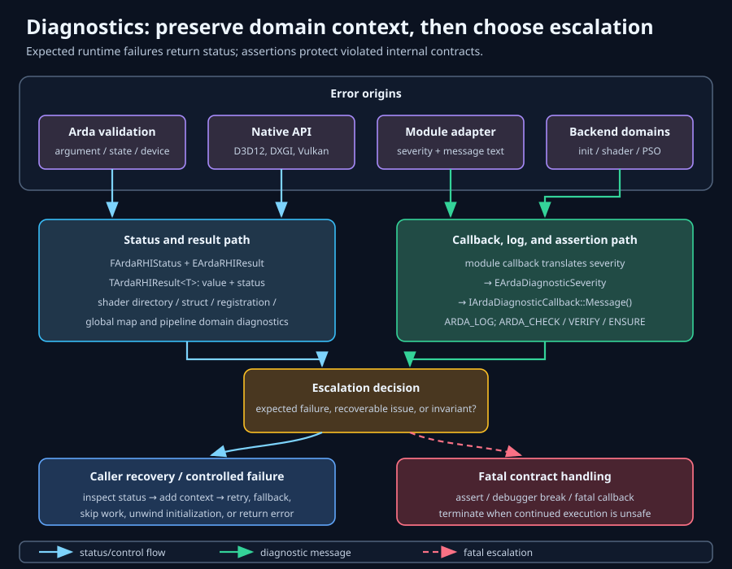

GPU validation setup
Install GPU debug layers and verify whether each suite exercises native validation.
How to use these examples
Learn to select a resource, admit the exact feature it needs and order its GPU use. First read resource ownership and data layout, command recording and synchronization, and backend initialization.
The mental model is allocation → view/binding → recorded use → submission → completion → reuse. A capability admits an operation; it does not establish a resource's state, memory residency or queue ownership. Creation can still fail for invalid descriptors or exhausted memory.

Short snippets are literal excerpts from compiled GoogleTest workloads. They use ASSERT_TRUE/EXPECT_EQ to make failures visible. Adapt those checks to your application's status handling. Variables and helpers are initialized in each linked complete example; snippets are not separate standalone programs. The complete examples show allocation, binding, execution, readback assertions and cleanup.
cmake --build build --config Debug --target ArdaBackendTests
ctest --test-dir build -C Debug -R ArdaBackend --output-on-failureUse the platform's actual executable directory for direct --gtest_filter runs. Shader artifacts and fixtures are deployed by the test build. Missing validation skips dependent GPU tests; see validation setup and failure diagnosis. A capability skip is not evidence that the skipped operation ran.
Installed layers and opt-in provisioning
With ARDASHIR_ENABLE_GPU_VALIDATION=ON, dedicated GPU test targets depend on ArdaValidationLayers. ARDGExample, CornellBox, RHITest and PixelSort enable native validation only with --validation, and their builds do not depend on layer provisioning. D3D12 deploys the matching debug DLL from the pinned Agility SDK NuGet dependency. Vulkan reuses an explicit layer directory, enabled x64 Windows registry entries, an earlier local install, SDK/environment paths or common Linux paths. ARDASHIR_PROVISION_VALIDATION defaults to OFF: use SetupGraphicsSDK.py to install missing layers, or explicitly enable source provisioning to build pinned Khronos sources under the build directory.
The optional Vulkan build needs Git, Python 3.10+, CMake 3.22.1+ and a suitable C++ compiler. Download/configure/build/install failures warn and leave the Ardashir build usable. Unchanged reconfigures and incremental builds reuse the previous attempt. Change setup options or remove validation-layers/attempt.stamp to retry. Interrupted attempts and missing generated path files retry automatically. These CMake helpers make no system installation or registry changes. Separately, SetupGraphicsSDK.py registers validation system-wide by default on Windows with Administrator privileges; use --local-only to opt out.
Choose a layer installation or offline build
cmake -S . -B build -DARDASHIR_PROVISION_VALIDATION=OFF
# Or point at a loadable manifest/library installation:
cmake -S . -B build -DARDASHIR_VULKAN_VALIDATION_DIR="C:/Vulkan/layers"
# Or build a local source checkout (upstream dependencies may need network):
cmake -S . -B build -DARDASHIR_PROVISION_VALIDATION=ON -DARDASHIR_VULKAN_VALIDATION_SOURCE_DIR="C:/src/Vulkan-ValidationLayers"An explicit layer directory suppresses downloads even if it is invalid. An installed layer still works with provisioning OFF. Existing CMake caches retain their selected value; set OFF explicitly to disable a previously enabled source build. Agility core-runtime deployment remains required for D3D12. Automatic Vulkan source provisioning is skipped while cross-compiling.
Direct runs and CTest use the same discovery
With validation enabled, executables enumerate discoverable layers before adding the generated validation-layers/layer-path.txt directory to VK_ADD_LAYER_PATH. The generated path is a fallback only when Khronos validation is not already discoverable, avoiding duplicate system/local manifests. Existing additional paths are retained. An explicit VK_LAYER_PATH remains authoritative, including deliberately empty layer directories. Native initialization probes whether the layer can actually load; a JSON manifest alone is insufficient.
Vulkan-enabled examples/tests default RTSS and OBS capture overlays off through their own manifest switches, with validation ON or OFF. Set ARDASHIR_ENABLE_VULKAN_OVERLAYS=1 to retain overlays; existing DISABLE_RTSS_LAYER and DISABLE_VULKAN_OBS_CAPTURE values remain authoritative. This changes only the executable process and retains validation diagnostics.
Validation-free builds and asynchronous verification
cmake -S . -B build/no-validation -DARDASHIR_ENABLE_GPU_VALIDATION=OFFThis switch is independent of Debug/Release and BUILD_TESTS. It removes native validation requests, local layer discovery and provisioning from examples/tests while keeping numerical assertions and PixelSort --verify enabled. All four examples reject --validation in an OFF build. PixelSort --verify independently compares CPU/GPU results; ARDGExample --verify enables terrain geometry and gradient readback checks that ordinary viewer runs omit. Existing example CTest cases run without native validation; separate Validation cases explicitly request it in ON builds, including asynchronous PixelSort replay. Dedicated GPU test executables retain their strict validation policy. Keep ON/OFF configurations in separate build directories. This is a test/example policy; applications retain their public backend configuration.
PixelSort CPU-oracle runs wait for each readback. AsyncReplay tests submit twelve frames without those per-frame waits, then retire work and check shutdown diagnostics. Bounded runs fail if the window closes early. CUDA and graph recipe tests keep their diagnostic callbacks alive through shutdown; malformed kernel registrations and unexpected initialization failures remain failures. See the complete validation guide for configuration and test-result policy.
Handle missing validation without hiding device failures
EArdaInitializeResult includes ValidationUnavailable. Headless callers read GetBackendInitializeResult after InitializeBackend returns false; presentation startup returns the enum directly. In validation-ON builds, the shared ARDA_REQUIRE_BACKEND test assertion skips only that result and keeps other initialization assertion failures. Unexpected validation requests in an OFF build remain failures. Presentation smoke programs use the existing CTest skip code 77.
A failed layer load can emit error diagnostics before returning ValidationUnavailable. Fixture teardown excludes only that confirmed validation-ON initialization skip from its zero-GPU-error assertion; successfully initialized workloads still require zero errors, including later hardware-feature skips. Applications can report the reason or explicitly reconfigure validation policy before retrying.
Reproduce missing and broken installations
Copy a validation-ON test executable and its D3D12/D3D12Core.dll into an isolated directory, omit d3d12SDKLayers.dll, and set VK_LAYER_PATH to an empty directory. To test broken Vulkan loading, copy only the manifest, leaving its referenced DLL absent. Neither procedure changes the machine’s installed layers.
Expect backend/graph tests requiring unavailable validation to skip while CPU and validation-independent tests continue. Missing-layer presentation startup returns 77. Run the same workloads with loadable layers and in a validation-OFF build to distinguish discovery failures from workload failures.
Find provisioning and native diagnostics
Read validation-layers/download.log, checkout.log, configure.log, build.log and install.log for the failed stage. Then inspect GetBackendError for the loader/device result. Missing validation is different from an unavailable graphics loader, unsupported GPU feature, malformed shader, or invalid descriptor. The latter errors are not converted into validation skips.
Further reading: Khronos build instructions, loader discovery, and Microsoft Agility deployment.
Checkpoints and further reading
Provisioning is best effort; the native loader determines whether validation is usable. Preserve unrelated device and workload failures.
- Which result permits ARDA_REQUIRE_BACKEND to skip?
- Why does an explicit VK_LAYER_PATH override an automatically installed layer?
- Why is a manifest whose library cannot load insufficient?
- Which shader, device and resource errors must remain failures?
Use discovery, result handling and diagnostics to check your answers.